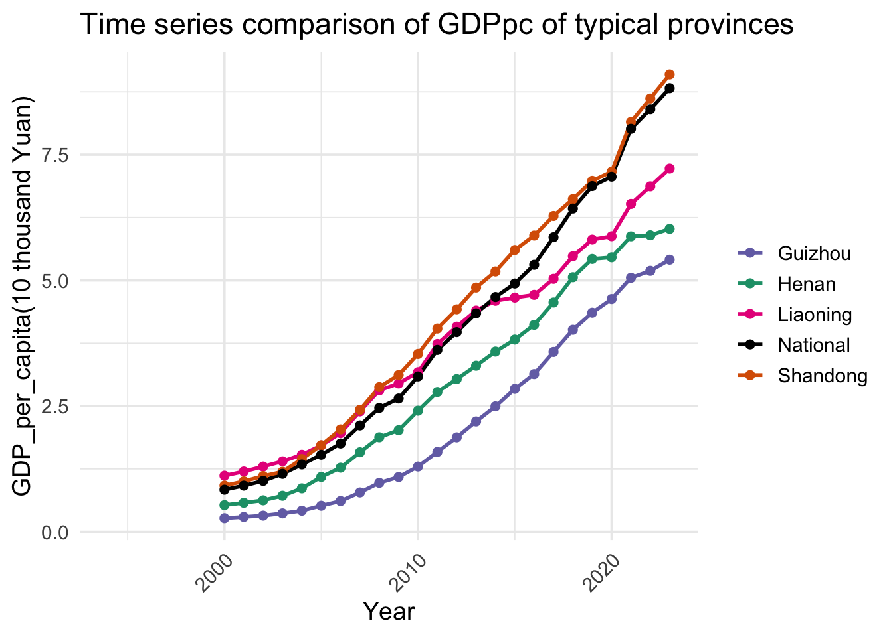
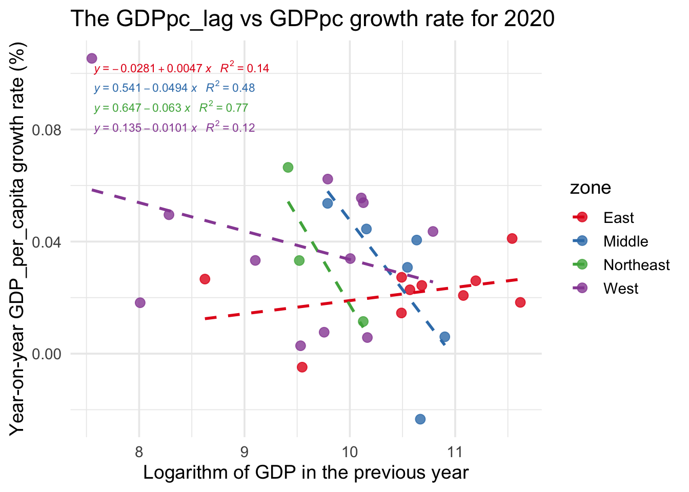
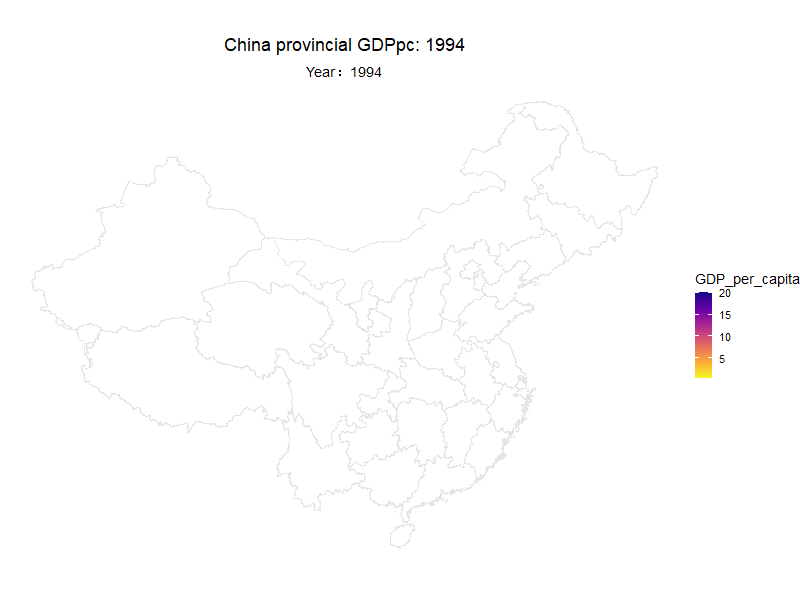
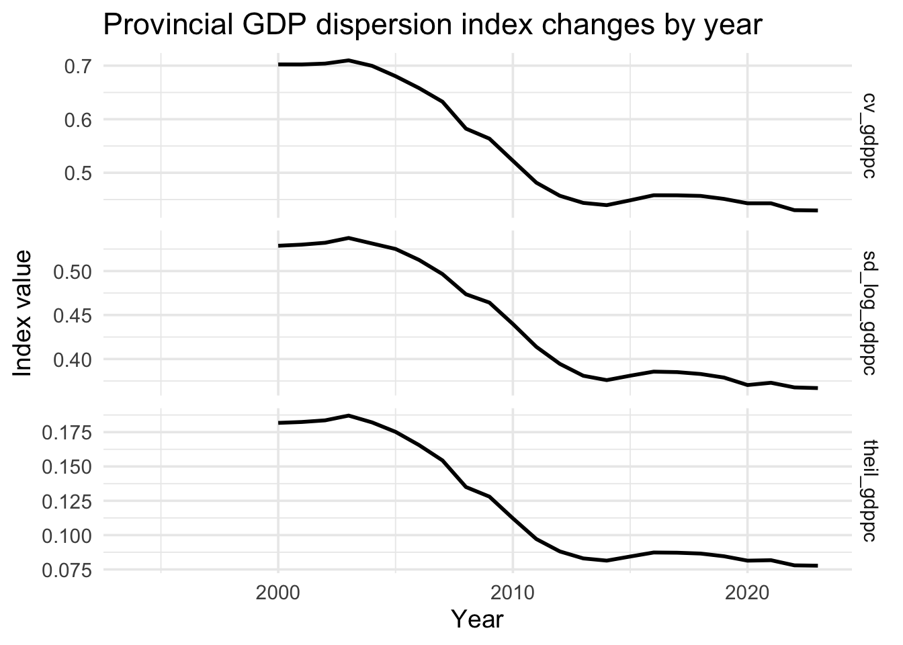

# pull data
url = "https://data.stats.gov.cn/english/easyquery.htm?cn=E0103"
# this data is about the number of residents in every province
annual_residents <- read.csv(
file = "data/Annual_residents.csv",
header = TRUE,
stringsAsFactors = FALSE,
skip = 3
)
annual_residents <- head(annual_residents,-1)
panel_residents <- annual_residents |>
pivot_longer(
cols = -Region,
names_to = "Year",
values_to = "Residents"
)
clean_year <-
function(df, year_col = "Year") {
df |> #extract the number of year
mutate(
Year = parse_number(.data[[year_col]])
)
}Assignment4
Reasearch between the GDP per capita and its growth rate
Prepared by Caoyu_Shao (Monash-ID:35323876)
Assignment_4 ETC5512
Due date: 2025-06-20
Topic of this work
Since the reform and opening up, China’s economic development has been changing with each passing day,however, the imbalance of economic development has always troubled China. This report will study the relationship between the total economic volume and growth rate of each province (autonomous region, municipality) since 1993, whether there is a Matthew effect or an equilibrium situation. Furthermore, we will explore whether there are different evolution laws in different regions and different stages.
Data Description
We compile a 30-year (1993–2023) provincial panel dataset that includes total GDP, GDP per capita, and per-capita GDP growth rates. This allows us to investigate imbalances in development across mainland China’s provinces and their evolution over time, and in particular to analyze how GDP volumes relate to growth rates.
GDP growth reflects a wide range of influences. Prior studies have identified key drivers—including industrial structure, fixed-asset investment growth, urbanization rate, per-capita education level, degree of openness, and R&D intensity—and we therefore include all of these as control variables in our regressions.
Industrial structure. Following Solar Jin, who documents a strong link between industrial upgrading and per-capita GDP growth, we adopt his Industrial Upgrade Index—the ratio of tertiary-sector value added to secondary-sector value added—as our measure of structural transformation. (Jin, 2025)
Fixed-asset investment growth. We measure this as the annual percentage change in gross fixed capital formation. Li & Li show that faster fixed-asset investment growth significantly boosts per-capita GDP growth. (Li & Li, 2022)
Degree of opening up. Defined as the extent of engagement with global markets via trade, foreign investment, and regulatory liberalization, openness has been found by Gu, Z. and Zhang, H. and Hu, X. to have a positive effect on per-capita GDP growth. (Gu et al., 2013)
Urbanization rate. Calculated as the share of the population living in urban areas—where per-capita output is generally higher—Song et al. Song, Cheng and Liu, Qi and Gu, Shulin and Wang, Qunfeng estimate an elasticity of roughly 0.15 with respect to per-capita GDP growth. (Song et al., 2018)
Human-capital intensity. We proxy this by per-capita education expenditure and R&D spending. Greater investment in education raises human-capital endowments—critical for output creation—and Wang, Y. and others quantitatively confirms that education funding is a significant driver of per-capita GDP growth. (Wang et al., 2021)
Data dictionary
China’s province-by-province permanent population data (1993-2023):
- source: Chinese National Bureau of Statistics(https://data.stats.gov.cn/adv.htm?cn=C01)
- content: It includes the population data in every province in China mainland from 1993 to 2023
- data form: census data
- restrictions: It includes the number of residents in every province, but there are still some value not available.For example, the number of residents before 2000 are not available.
- ethics and privacies: 1.Provincial data are highly aggregated statistical summaries that do not involve any specific information about individuals or families and cannot be used to re-identify individuals. Therefore, there is generally no direct privacy leakage issue. 2.The reprint or quotation of the contents of this database must be a reasonable and good-faith quotation for the purpose of using news or data-based public free information. The reprint or quotation of the copyrighted contents of this database must indicate the words “Source: National Bureau of Statistics”. There is no problem if we use it in our assignment.
China’s GDP level by province(1993-2023):
- source: Chinese National Bureau of Statistics(https://data.stats.gov.cn/adv.htm?cn=C01)
- content: It includes the GDP of 31 provinces in China mainland from 1993 to 2023
- data form:census data
- restriction: It includes the GDP of all the provinces without the population so the GDP per capita is not straight forward.
- ethics and privacies:1.Provincial data are highly aggregated statistical summaries that do not involve any specific information about individuals or families and cannot be used to re-identify individuals. Therefore, there is generally no direct privacy leakage issue. 2.The reprint or quotation of the contents of this database must be a reasonable and good-faith quotation for the purpose of using news or data-based public free information. The reprint or quotation of the copyrighted contents of this database must indicate the words “Source: National Bureau of Statistics”. There is no problem if we use it in our assignment.
China’s industrial structure by province:
- source: Chinese National Bureau of Statistics(https://data.stats.gov.cn/adv.htm?cn=C01)
- content: It includes the ratio of the added value of the tertiary industry to the added value of the secondary industry to measure the deep transformation of industrial structure.
- data form:census data
- restrictions:
- privacy and ethic risks:1.Provincial data are highly aggregated statistical summaries that do not involve any specific information about individuals or families and cannot be used to re-identify individuals. Therefore, there is generally no direct privacy leakage issue. 2.The reprint or quotation of the contents of this database must be a reasonable and good-faith quotation for the purpose of using news or data-based public free information. The reprint or quotation of the copyrighted contents of this database must indicate the words “Source: National Bureau of Statistics”. There is no problem if we use it in our assignment.
Fixed asset investment growth rate by province(2018-2023):
- source: Chinese National Bureau of Statistics(https://data.stats.gov.cn/adv.htm?cn=C01)
- content:It includes the data of the growing rate of fixed asset from 2018 to 2023.
- data form:.census data
- restrictions: There is only the data from 2018 to 2023, so it is not comprehensive.
- privacy and ethic risks:1.Provincial data are highly aggregated statistical summaries that do not involve any specific information about individuals or families and cannot be used to re-identify individuals. Therefore, there is generally no direct privacy leakage issue. 2.The reprint or quotation of the contents of this database must be a reasonable and good-faith quotation for the purpose of using news or data-based public free information. The reprint or quotation of the copyrighted contents of this database must indicate the words “Source: National Bureau of Statistics”. There is no problem if we use it in our assignment.
Urbanization rate by province(2005-2023):
- source: Chinese Statistical Yearbook(https://www.stats.gov.cn/sj/ndsj/)
- content: It includes the proportion of urban populations from 2005 to 2023
- data form:census data
- restrictions: The time range of the data is from 2005, not comprehensive.
- privacy and ethic risks:1.Provincial data are highly aggregated statistical summaries that do not involve any specific information about individuals or families and cannot be used to re-identify individuals. Therefore, there is generally no direct privacy leakage issue. 2.The reprint or quotation of the contents of this database must be a reasonable and good-faith quotation for the purpose of using news or data-based public free information. The reprint or quotation of the copyrighted contents of this database must indicate the words “Source: National Bureau of Statistics”. There is no problem if we use it in our assignment.
Human capital level by province:
- source: Ministry of Education(http://www.moe.gov.cn/jyb_xxgk/xxgk/neirong/tongji/jytj_jftjgg/)
- content:It contains the education investment by regions
- data form:census data
- restrictions: it contains the education investment from 2001.
- release date:2024-12-19
- privacy and ethic risks:1.Provincial data are highly aggregated statistical summaries that do not involve any specific information about individuals or families and cannot be used to re-identify individuals. Therefore, there is generally no direct privacy leakage issue. 2.The reprint or quotation of the contents of this database must be a reasonable and good-faith quotation for the purpose of using news or data-based public free information. The reprint or quotation of the copyrighted contents of this database must indicate the words “Source: National Bureau of Statistics”. There is no problem if we use it in our assignment.
Degree of openness by province:
- source:Chinese Statistical Yearbook(https://www.stats.gov.cn/sj/ndsj/)
- content: It is not very easy to weigh the degree of openness by provinvce. Then we come up that we could use the volumn of imports and exports of the province. So we use the total volumn of the exports and imports to indicate the degree of openness by province.
- data form:census data
- restrictions:The data is extracted from the Chinese Statistical Yearbook
- privacy and ethic risks:1.Provincial data are highly aggregated statistical summaries that do not involve any specific information about individuals or families and cannot be used to re-identify individuals. Therefore, there is generally no direct privacy leakage issue. 2.The reprint or quotation of the contents of this database must be a reasonable and good-faith quotation for the purpose of using news or data-based public free information. The reprint or quotation of the copyrighted contents of this database must indicate the words “Source: National Bureau of Statistics”. There is no problem if we use it in our assignment.
GIS map by province
- source:GADM（Global Administrative Areas）(https://gadm.org/download_country_v3.html)，download the china’s resource
- content
- data form: census data
- restrictions:
- privacy and ethics risks:1.Provincial data are highly aggregated statistical summaries that do not involve any specific information about individuals or families and cannot be used to re-identify individuals. Therefore, there is generally no direct privacy leakage issue. 2.The reprint or quotation of the contents of this database must be a reasonable and good-faith quotation for the purpose of using news or data-based public free information. The reprint or quotation of the copyrighted contents of this database must indicate the words “Source: National Bureau of Statistics”. There is no problem if we use it in our assignment.
Division of economic zones in each province:
source: Chinese National Bureau of Statistics (https://www.stats.gov.cn/zt_18555/zthd/lhfw/2021/rdwt/202302/t20230214_1903926.html)
content: China was divided into four zones according to the Chinese Statistical yearbook
data form: census data
restrictions: The information is extracted from the html and edited manually.
privacy and ethics risks:1.Provincial data are highly aggregated statistical summaries that do not involve any specific information about individuals or families and cannot be used to re-identify individuals. Therefore, there is generally no direct privacy leakage issue. 2.The reprint or quotation of the contents of this database must be a reasonable and good-faith quotation for the purpose of using news or data-based public free information. The reprint or quotation of the copyrighted contents of this database must indicate the words “Source: National Bureau of Statistics”. There is no problem if we use it in our assignment.
Data download
The following section describes how the data can be downloaded from its original sources and what initial data wrangling steps have been taken.
Downloading Dataset 1
Downloading Dataset 2
#pull data
url = "https://data.stats.gov.cn/english/easyquery.htm?cn=E0103"
# this data is about the GDP of each province
annual_gdp <- read.csv(
file = "data/Annual_gdp.csv",
header = TRUE,
stringsAsFactors = FALSE,
skip = 3
)
annual_gdp <- head(annual_gdp,-1)
panel_gdp <- annual_gdp |>
pivot_longer(
cols = -Region,
names_to = "Year",
values_to = "GDP"
)
panel_all <-
right_join(
panel_gdp,
panel_residents,
by= c("Region","Year")
)
panel_all <-
mutate(
panel_all,
"GDP_per_capita" = GDP/Residents
)
panel_all <- clean_year(panel_all)
panel_all <- panel_all|>
arrange(Region,Year)|>
group_by(Region)|>
mutate(GDP_prev = dplyr::lag(GDP),
GDP_growth_rate = (GDP - GDP_prev)/GDP_prev,
GDPpc_prev =dplyr::lag(GDP_per_capita),
GDP_per_capita_growth_rate =(GDP_per_capita - GDPpc_prev)/GDPpc_prev)Downloading Dataset 3
# This data is the ratio of the added value of the tertiary
# industry to the added value of the secondary industry
# to measure the deep transformation of industrial structure.
second_industry_increase <- read_csv(
"data/second_industry_increase.csv",
locale = locale(encoding = "GB18030"),
skip=3 )
names(second_industry_increase)[1] <- "Region"
panel_second_industry_increase <-
second_industry_increase|>
pivot_longer(
cols = -Region,
names_to = "Year",
values_to = "secondary_industry_increase"
)
tertiary_industry_increase <- read_csv(
"data/tertiary_industry_increase.csv",
locale = locale(encoding = "GB18030"),
skip=3 )
names(tertiary_industry_increase)[1] <- "Region"
panel_tertiary_industry_increase <-
tertiary_industry_increase|>
pivot_longer(
cols = -Region,
names_to = "Year",
values_to = "tertiary_industry_increase"
)
panel_industry_increase <-
right_join(
panel_second_industry_increase,
panel_tertiary_industry_increase,
by=c("Region","Year")
) |> mutate(
ratio =secondary_industry_increase/tertiary_industry_increase
)
province_lookup <- tribble(
~Province, ~Province_EN,
"北京市", "Beijing",
"天津市", "Tianjin",
"上海市", "Shanghai",
"重庆市", "Chongqing",
"河北省", "Hebei",
"山西省", "Shanxi",
"辽宁省", "Liaoning",
"吉林省", "Jilin",
"黑龙江省", "Heilongjiang",
"江苏省", "Jiangsu",
"浙江省", "Zhejiang",
"安徽省", "Anhui",
"福建省", "Fujian",
"江西省", "Jiangxi",
"山东省", "Shandong",
"河南省", "Henan",
"湖北省", "Hubei",
"湖南省", "Hunan",
"广东省", "Guangdong",
"海南省", "Hainan",
"四川省", "Sichuan",
"贵州省", "Guizhou",
"云南省", "Yunnan",
"陕西省", "Shaanxi",
"甘肃省", "Gansu",
"青海省", "Qinghai",
"台湾省", "Taiwan",
"内蒙古自治区", "Inner Mongolia",
"广西壮族自治区", "Guangxi",
"西藏自治区", "Tibet",
"宁夏回族自治区", "Ningxia",
"新疆维吾尔自治区", "Xinjiang"
)
panel_industry_increase <- panel_industry_increase %>%
left_join(province_lookup,
by = c("Region" = "Province"))
panel_industry_increase <- panel_industry_increase %>%
select(-1) %>%
select(last_col(), everything())
panel_industry_increase <-
clean_year(panel_industry_increase)Downloading Dataset 4
# The data set is about the growth rate of fixed asset.
url = "https://data.stats.gov.cn/easyquery.htm?cn=E0103"
# This data is about the growth rate of fixed asset. But unfortunately, the data dates from 2018 and is not comprehensive.
Growth_rate_of_fixed_asset <-
read_csv("data/Growth_rate_of_fixed_asset(2018-2023).csv",
locale = locale(encoding = "GB18030"),
skip = 3)
Growth_rate_of_fixed_asset <- head(Growth_rate_of_fixed_asset,-1)
Growth_rate_of_fixed_asset <- Growth_rate_of_fixed_asset %>%
select(where(~ !any(is.na(.))))
names(Growth_rate_of_fixed_asset)[1] <- "Region"
Growth_rate_of_fixed_asset <- Growth_rate_of_fixed_asset %>%
left_join(province_lookup,
by = c("Region" = "Province")) |>
select(-1) %>%
select(last_col(), everything())
panel_growth_rate_of_fixed_asset <-
Growth_rate_of_fixed_asset|>
pivot_longer(
cols = -Province_EN,
names_to = "Year",
values_to = "growth_rate_of_fixed_asset"
)
panel_growth_rate_of_fixed_asset <- clean_year(panel_growth_rate_of_fixed_asset)Downloading Dataset 5
# This data is about the urbanization rate in China.
url = "https://www.stats.gov.cn/sj/ndsj/2021/indexch.htm"
# this data is extracted from the China Satistical yearbook and it is downloaded manually.
df1 <-
read_csv(
"data/urbanization_rate(2005-2012).csv",
skip =2
)
df2 <-
read_csv(
"data/urbanization_rate(2013-2023).csv"
)
urbanization_rate <-
df1 |>
right_join(df2, by="Region")|>
slice(-1)
panel_urbanization_rate <-
urbanization_rate|>
pivot_longer(
cols = -"Region",
names_to = "Year",
values_to = "urbanization_rate")Downloading Dataset 6
#url = "http://www.moe.gov.cn/jyb_xxgk/xxgk/neirong/tongji/jytj_jftjgg/"
Education_investment <- read_excel("data/education_investment(2001-2023).xlsx")
Education_investment<-
Education_investment |>
slice(-1)|>
rename(
Region = `...1`
)
panel_education_investment <-
Education_investment|>
mutate(
across(
.cols = -Region,
.fns = ~ as.numeric(.),
.names = "{.col}")
) |>
pivot_longer(
cols = -Region,
names_to = "Year",
values_to = "Education_investment"
)
panel_education_investment <- panel_education_investment %>%
left_join(province_lookup,
by = c("Region" = "Province"))
panel_education_investment<- panel_education_investment %>%
select(-1) %>%
select(last_col(), everything()) Downloading Dataset 7
#This data is about the degree of openness.It is the import and export volume of every province.
openness <-
read_excel("data/import_and_export_volume(1996-2023).xlsx") |>
select(-...3) |>
select(-...4)
names(openness)[1] <- "Province_EN"
names(openness)[2] <- "Year"
names(openness)[3] <- "Volume"Downloading Dataset8
# this data is about the geographic information of each province in China,
#to url = https://gadm.org/download_country.html
# choose country =China， level=1. Downloading Dataset 9
#it is a html file and i have edited it manually.
province_location <-
read.csv(
"data/province_location.csv"
)
province_location$zone<-
trimws(province_location$zone)
panel_all <-
panel_all |>
right_join(
province_location,
by = "Region"
)Why we take the data
In order to study whether the development of Chinese provinces is regional equilibrium or Matthew effect, we believe that it is crucial to capture the relationship between the GDP of each province and its GDP growth rate. However, after reading some literature, we found that there are many control variables that can affect the GDP growth rate, such as the growth rate of fixed asset investment, urbanization level, education investment level, and degree of opening up to the outside world. So we collected these data from the entire Internet to exclude their possible influence on our conclusions.
Data source for it
- Dataset 1,2,3,4,5,7,9 are all from the Chinese National Bureau of Statistics
- Dataset 6 are from the Ministry of Education
What the data tells us?
Data processing
Exploratory Data Analysis
GDP_growth_rate GDP_per_capita_growth_rate log_GDPpc_lag
Min. :-0.05337 Min. :-0.02338 Min. :-1.2939
1st Qu.: 0.07978 1st Qu.: 0.07136 1st Qu.: 0.3283
Median : 0.11543 Median : 0.10606 Median : 1.1688
Mean : 0.12980 Mean : 0.11353 Mean : 1.0031
3rd Qu.: 0.17308 3rd Qu.: 0.15044 3rd Qu.: 1.6561
Max. : 0.47586 Max. : 0.28597 Max. : 2.9455
NA's :217 NA's :217
ratio urbanization_rate Trade_share Edu_share
Min. :0.1758 Min. :26.87 Min. :0.00000 Min. :0.01692
1st Qu.:0.7647 1st Qu.:46.80 1st Qu.:0.01113 1st Qu.:0.02637
Median :0.9753 Median :56.05 Median :0.01881 Median :0.03298
Mean :0.9892 Mean :56.96 Mean :0.04190 Mean :0.03952
3rd Qu.:1.1870 3rd Qu.:64.43 3rd Qu.:0.04852 3rd Qu.:0.04519
Max. :2.4239 Max. :89.46 Max. :1.45008 Max. :0.17155
NA's :390 NA's :90 NA's :217
growth_rate_of_fixed_asset
Min. :-24.300
1st Qu.: -2.800
Median : 3.550
Mean : 2.487
3rd Qu.: 8.700
Max. : 30.900
NA's :744 This is a descriptive_statistics for every variable. We could see the minimum value of log_GDPpc_lag is below 0, that is because some provinces have GDP_per_capita which is below 1 (10 thousand) in the past.

This chart is about the Time series comparison of GDP_per_capita of typical provinces. As mentioned above, china has four zones, they are eastern, western, middle and north-eastern. Shandong is a province in eastern part. Henan is a province in the middle. Liaoning is a province in northeastern. Guizhou is a province in west. There is not enough evidence to conclude. However, the sample conveys the information that the GDP per capita increase steadily from 2000.

From this chart we could see that R^2 in eastern part and western part are lower than 0.4, so they can’t explain well. However, the middle and northeastern part have a high R^2, so it can explain well. They have a negative relationship .It means the higher GDP_per_capita, the lower its growth rate.
Reading layer `gadm41_CHN_1' from data source
`/Users/shaocaoyu/Downloads/ETC5512_assignment4/data/gadm41_CHN_shp/gadm41_CHN_1.shp'
using driver `ESRI Shapefile'
Simple feature collection with 37 features and 11 fields
Geometry type: MULTIPOLYGON
Dimension: XY
Bounding box: xmin: 73.5577 ymin: 18.15931 xmax: 134.7739 ymax: 53.56086
Geodetic CRS: WGS 84
We could only find the number of residents in each province from 2000. So the GDP_per_capita starts from 2000. Some provinces’ data is not included like Hongkong , which is blank in the map.
This gif is a heat map of the per capita GDP of each province. The darker the color, the higher the GDP per capita. The speed at which the color becomes darker means the speed at which the per capita GDP grows. We can see that since 2000, the color of the southeast coastal areas is obviously darker than that of the inland areas and it is becoming more and more obvious. However, after 2016, the inland areas have begun to darken again.
log_GDP_lag ratio
5.530884 1.854480
urbanization_rate Trade_share
8.133084 8.991902
Edu_share growth_rate_of_fixed_asset
5.136624 1.082856 The value of every variable is under 10. The main variable log_GDP_lag’s VIF value is 5.53.
Robustness test
Modeling & Results
Call:
lm(formula = GDP_per_capita_growth_rate ~ log_GDP_lag, data = df20)
Residuals:
Min 1Q Median 3Q Max
-0.04690 -0.01692 0.00115 0.01801 0.04940
Coefficients:
Estimate Std. Error t value Pr(>|t|)
(Intercept) 0.129426 0.043353 2.985 0.0057 **
log_GDP_lag -0.009876 0.004317 -2.288 0.0296 *
---
Signif. codes: 0 '***' 0.001 '**' 0.01 '*' 0.05 '.' 0.1 ' ' 1
Residual standard error: 0.02318 on 29 degrees of freedom
Multiple R-squared: 0.1529, Adjusted R-squared: 0.1236
F-statistic: 5.233 on 1 and 29 DF, p-value: 0.02965
Call:
lm(formula = GDP_per_capita_growth_rate ~ log_GDP_lag + ratio +
urbanization_rate + Trade_share + Edu_share + growth_rate_of_fixed_asset,
data = df20)
Residuals:
Min 1Q Median 3Q Max
-0.03457 -0.01173 -0.00258 0.01219 0.03573
Coefficients:
Estimate Std. Error t value Pr(>|t|)
(Intercept) 0.2567916 0.1668660 1.539 0.137
log_GDP_lag -0.0125218 0.0100133 -1.251 0.224
ratio 0.0067882 0.0293405 0.231 0.819
urbanization_rate -0.0015488 0.0010672 -1.451 0.160
Trade_share 0.3036675 0.3552812 0.855 0.402
Edu_share -0.5469370 0.6086952 -0.899 0.378
growth_rate_of_fixed_asset 0.0006829 0.0003728 1.832 0.080 .
---
Signif. codes: 0 '***' 0.001 '**' 0.01 '*' 0.05 '.' 0.1 ' ' 1
Residual standard error: 0.02 on 23 degrees of freedom
(1 observation deleted due to missingness)
Multiple R-squared: 0.2718, Adjusted R-squared: 0.08181
F-statistic: 1.431 on 6 and 23 DF, p-value: 0.2459%20Regression%20Example-1.png)

Explanation for different_dispersion_index_by_year
cv_gdppc
CV is the coefficient of Variation.
cv_gdppc = sd(GDP_per_capita) / mean(GDP_per_capita)
It means the relative degree of dispersion. The higher it is, the greater the gap in per capita GDP between different provinces.
sd_log_gdppc
It origines from taking the natural logarithm of each province’s per capita GDP and then calculating the standard deviation
It can weaken the amplifying effect of extremely high values on differences and focus more on the relative differences in the middle range compared with CV.
It means the relative degree of dispersion. The higher it is, the greater the gap in per capita GDP between different provinces.
theil_gdppc
- Theil index is also an indicator of balance. The larger the index, the more unbalanced it is, and the smaller the index, the more balanced it is.
In conclusion, different_dispersion_index_by_year tells us the convergence effect.
Twoways effects Within Model
Call:
plm(formula = GDP_per_capita_growth_rate ~ log_GDPpc_lag + ratio +
urbanization_rate + Trade_share + Edu_share + growth_rate_of_fixed_asset,
data = pdata, effect = "twoways", model = "within")
Balanced Panel: n = 30, T = 6, N = 180
Residuals:
Min. 1st Qu. Median 3rd Qu. Max.
-0.03661505 -0.00932847 -0.00071592 0.01009356 0.05865263
Coefficients:
Estimate Std. Error t-value Pr(>|t|)
log_GDPpc_lag -0.69816134 0.05705795 -12.2360 < 2.2e-16 ***
ratio 0.30815615 0.02856454 10.7881 < 2.2e-16 ***
urbanization_rate 0.00413376 0.00260173 1.5888 0.114367
Trade_share 1.10290946 0.33376603 3.3044 0.001211 **
Edu_share -0.55720276 0.88242562 -0.6314 0.528787
growth_rate_of_fixed_asset 0.00024348 0.00015532 1.5676 0.119254
---
Signif. codes: 0 '***' 0.001 '**' 0.01 '*' 0.05 '.' 0.1 ' ' 1
Total Sum of Squares: 0.093843
Residual Sum of Squares: 0.036721
R-Squared: 0.6087
Adj. R-Squared: 0.49609
F-statistic: 36.037 on 6 and 139 DF, p-value: < 2.22e-16# A tibble: 6 × 7
term estimate std.error statistic p.value conf.low conf.high
<chr> <dbl> <dbl> <dbl> <dbl> <dbl> <dbl>
1 log_GDPpc_lag -6.98e-1 0.0571 -12.2 8.05e-24 -8.10e-1 -0.586
2 ratio 3.08e-1 0.0286 10.8 4.33e-20 2.52e-1 0.364
3 urbanization_rate 4.13e-3 0.00260 1.59 1.14e- 1 -9.66e-4 0.00923
4 Trade_share 1.10e+0 0.334 3.30 1.21e- 3 4.49e-1 1.76
5 Edu_share -5.57e-1 0.882 -0.631 5.29e- 1 -2.29e+0 1.17
6 growth_rate_of_fixed… 2.43e-4 0.000155 1.57 1.19e- 1 -6.09e-5 0.000548Explanation for panel_fixed_effects_regression
log_GDPpc_lag (β = −0.6982, p < 0.001).
It means a one‐unit increase in last year’s log per-capita GDP is associated with a 0.698-unitdecrease in the dependent variable.
Highly statistically significant (p < 0.001), indicating strong inverse persistence or convergence effect.
ratio (β = 0.3082, p < 0.001)
A one‐unit rise in this “ratio” variable corresponds to a 0.308-unit increase in the outcome.
Extremely significant (p<0.001), showing a robust positive relationship.It indicates that when secondary industry increased more than tertiary industry, GDP_per_capita increases more.
urbanization_rate (β = 0.00413, p = 0.114)
- Not statistically significant at the 5% level (p > 0.05), so we cannot confidently assert an effect.
growth_rate_of_fixed_asset (β = 0.0002435, p = 0.119)
- Also not significant (p > 0.05), suggesting this variable does not meaningfully explain the variation.
In our model, there is a convergence effect between provinces.
Convergence Analysis

The picture is the standard deviation of logarithmic GDP of each province changes by the year. The higher sd, the more imbalanced the provinces are.
From 1993 to 1997, we find the sd increase a lot.I think that is because Coastal provinces were the first to benefit from reform and opening up, foreign investment, and export-oriented economies, and their growth rates far exceeded those of inland provinces.
From 1997-2003, we find it decrease a lot. We think that is because the 1997 Southeast Asian financial crisis caused serious damage to the export-oriented economies of the coastal areas. At the same time, the central and western provinces also began industrial transfer and infrastructure construction, narrowing the gap with the coastal areas.
From 2003-2007, the eastern coastal areas have further expanded their lead in exports
From 2008-2023, the global financial crisis in 2008 caused severe damage to the coastal economy. Due to the overall weakness of the domestic economy, the Chinese government began to accelerate investment and development in the central and western regions.
What’s really under the surface?
The conclusion is that, from the perspective of GDP_per_capita, China is going to convergence.
We believe that the reason why GDP per capita tends to be balanced is the free flow of various factors, mainly population. For example, people will move to places with higher GDP per capita, which allows them to create more value and obtain higher labor remuneration accordingly. At the same time, due to the large outflow of population in the original area, GDP per capita will also rise. For example, the manufacturing and tertiary industries in coastal provinces have absorbed a large number of inland labor forces. At the same time, the per capita factors in the inland have become enriched. Mechanized agriculture can be carried out in the vast areas of inland areas, which can greatly increase GDP per capita compared to primitive manual agriculture.
What’s in the section
Question 4
Tell us about a part(s) of your data processing or analysis that weren’t “sexy” and wouldn’t typically be included in a blog post. (e.g. Was their any data drudgery or time intensive wrangling? Were there any repetitive tasks or manual tasks? If it was easy, describe what made it easy?)
For the indicator of education investment, during the data collection process, we consulted the statistical table of the implementation of national education funds. This is an appendix presented in the form of Word, which we sorted out manually.
As an indicator to measure the degree of openness of a region, the total import and export trade volume also encountered troubles during the collection process. I got this data from the China National Statistical Yearbook. There is no Excel link on the website for some years, so we finally used the manual input method.
For the panel data of each province and region, the basis we found was the response given by the National Bureau of Statistics of China in the Q&A. We finally entered it manually.
The data we use is about China, most of the data is downloaded from Chinese websites, and character conversion is also a problem.
Question 5
Were there any challenges that you faced in conducting this analysis. These may take the form of data limitations or coding challenges? (e.g. Was there anything in your analysis that you were not anticipating when you started? Did you have to change your intended scope?)
When we first analyzed the Matthew effect or regional equilibrium, we used GDP and GDP growth rate. We believed that when the GDP growth rate was positively correlated with the total GDP, we could draw the conclusion of the Matthew effect. But later we found through empirical analysis that there is no such pattern. This is because China’s various provincial administrative regions were not evenly divided at the beginning. On the contrary, the two most developed cities in China, Beijing and Shanghai, have provincial administrative levels, but their administrative scope is very small, which leads to their economic totals not being at the forefront nationwide. If the Matthew effect is significant, these two cities must have the highest economic growth, but the data shows that the two regions ranked ninth (Shanghai) and eleventh (Beijing) have the highest economic growth. This obviously does not conform to our empirical analysis. So later we chose to use per capita GDP and its growth as indicators.
Later, in the process of empirical analysis, we found that some provinces, such as Tibet, whose administrative regions are mostly located in the Qinghai-Tibet Plateau, have sparse economic activities. Its GDP in 2024 is 296.4 billion, which is only about 2% of the first place, Guangdong Province’s 14163.3 billion. This led to extreme values in our analysis. Later, we found that a common practice is to take the logarithm of GDP and then conduct empirical analysis with other variables.
At the beginning, we used the government’s annual investment in education as an indicator of education investment, and the sum of each region’s commodity imports and exports to measure a region’s degree of openness. Later we found three problems. First, the multicollinearity analysis failed, because the government’s investment in education is often regarded as part of government investment. It and exports can be included in GDP at the same time, increasing and decreasing together. Second, when analyzing the data, we found that wealthy provinces naturally performed better in education and import and export volumes, while poor provinces invested less in education and had less import and export trade. This cannot measure the degree of importance a region places on education and the degree of openness to the outside world, which is contrary to the original intention of our setting up this control variable. So later we used the proportion of education investment in GDP as an indicator of education investment, and the proportion of imports and exports in GDP as an indicator of openness to the outside world.
Question 6
Tell us about any imperfect parts of your work or how would like to expand this analysis in future? (We don’t expect you to solve everything in one assignment.)
First, Robustness test. I originally wanted to do a robustness test. I can understand the significance of robustness test, but I don’t know how to do it.
I don’t know how to delete the console output of above the gif.
Question 7
An additional 2 marks will be awarded for the code you used to produce your analysis and report. These marks include reproducibility, compiling of your .html, production of any figures and tables etc.
It displays in the Appendix.
Packages used in this assignment
Wickham et al. (2019) Müller (2020) Pebesma & Bivand (2023) Pebesma (2018) Pedersen (2024) Wickham, Hester, et al. (2024) Wickham (2024) Wickham (2023) Wickham et al. (2023) Wickham, Vaughan, et al. (2024) Wickham & Bryan (2025) Müller & Wickham (2023) Aphalo (2024) Wickham (2016) Garnier et al. (2024) Pedersen & Robinson (2024) Fox & Weisberg (2019) Hebbali (2024) Robinson et al. (2025) Croissant & Millo (2018) Croissant & Millo (2008) Millo (2017) Zeileis & Hothorn (2002) Zeileis et al. (2020) Zeileis (2004) Zeileis (2006)
Code_used_in_assignment
knitr::opts_chunk$set(
echo = FALSE,
warning = FALSE,
message = FALSE,
include = TRUE,
fig.keep = 'asis')
library(tidyverse)
library(here)
library(sf)
library(patchwork)
library(readr)
library(rvest)
library(stringr)
library(dplyr)
library(tidyr)
library(readxl)
library(tibble)
library(ggpmisc)
library(ggplot2)
library(viridis)
library(gganimate)
library(car)
library(olsrr)
library(broom)
library(plm)
library(lmtest)
library(sandwich)
# pull data
url = "https://data.stats.gov.cn/english/easyquery.htm?cn=E0103"
# this data is about the number of residents in every province
annual_residents <- read.csv(
file = "data/Annual_residents.csv",
header = TRUE,
stringsAsFactors = FALSE,
skip = 3
)
annual_residents <- head(annual_residents,-1)
panel_residents <- annual_residents |>
pivot_longer(
cols = -Region,
names_to = "Year",
values_to = "Residents"
)
clean_year <-
function(df, year_col = "Year") {
df |> #extract the number of year
mutate(
Year = parse_number(.data[[year_col]])
)
}
#pull data
url = "https://data.stats.gov.cn/english/easyquery.htm?cn=E0103"
# this data is about the GDP of each province
annual_gdp <- read.csv(
file = "data/Annual_gdp.csv",
header = TRUE,
stringsAsFactors = FALSE,
skip = 3
)
annual_gdp <- head(annual_gdp,-1)
panel_gdp <- annual_gdp |>
pivot_longer(
cols = -Region,
names_to = "Year",
values_to = "GDP"
)
panel_all <-
right_join(
panel_gdp,
panel_residents,
by= c("Region","Year")
)
panel_all <-
mutate(
panel_all,
"GDP_per_capita" = GDP/Residents
)
panel_all <- clean_year(panel_all)
panel_all <- panel_all|>
arrange(Region,Year)|>
group_by(Region)|>
mutate(GDP_prev = dplyr::lag(GDP),
GDP_growth_rate = (GDP - GDP_prev)/GDP_prev,
GDPpc_prev =dplyr::lag(GDP_per_capita),
GDP_per_capita_growth_rate =(GDP_per_capita - GDPpc_prev)/GDPpc_prev)
# This data is the ratio of the added value of the tertiary
# industry to the added value of the secondary industry
# to measure the deep transformation of industrial structure.
second_industry_increase <- read_csv(
"data/second_industry_increase.csv",
locale = locale(encoding = "GB18030"),
skip=3 )
names(second_industry_increase)[1] <- "Region"
panel_second_industry_increase <-
second_industry_increase|>
pivot_longer(
cols = -Region,
names_to = "Year",
values_to = "secondary_industry_increase"
)
tertiary_industry_increase <- read_csv(
"data/tertiary_industry_increase.csv",
locale = locale(encoding = "GB18030"),
skip=3 )
names(tertiary_industry_increase)[1] <- "Region"
panel_tertiary_industry_increase <-
tertiary_industry_increase|>
pivot_longer(
cols = -Region,
names_to = "Year",
values_to = "tertiary_industry_increase"
)
panel_industry_increase <-
right_join(
panel_second_industry_increase,
panel_tertiary_industry_increase,
by=c("Region","Year")
) |> mutate(
ratio =secondary_industry_increase/tertiary_industry_increase
)
province_lookup <- tribble(
~Province, ~Province_EN,
"北京市", "Beijing",
"天津市", "Tianjin",
"上海市", "Shanghai",
"重庆市", "Chongqing",
"河北省", "Hebei",
"山西省", "Shanxi",
"辽宁省", "Liaoning",
"吉林省", "Jilin",
"黑龙江省", "Heilongjiang",
"江苏省", "Jiangsu",
"浙江省", "Zhejiang",
"安徽省", "Anhui",
"福建省", "Fujian",
"江西省", "Jiangxi",
"山东省", "Shandong",
"河南省", "Henan",
"湖北省", "Hubei",
"湖南省", "Hunan",
"广东省", "Guangdong",
"海南省", "Hainan",
"四川省", "Sichuan",
"贵州省", "Guizhou",
"云南省", "Yunnan",
"陕西省", "Shaanxi",
"甘肃省", "Gansu",
"青海省", "Qinghai",
"台湾省", "Taiwan",
"内蒙古自治区", "Inner Mongolia",
"广西壮族自治区", "Guangxi",
"西藏自治区", "Tibet",
"宁夏回族自治区", "Ningxia",
"新疆维吾尔自治区", "Xinjiang"
)
panel_industry_increase <- panel_industry_increase %>%
left_join(province_lookup,
by = c("Region" = "Province"))
panel_industry_increase <- panel_industry_increase %>%
select(-1) %>%
select(last_col(), everything())
panel_industry_increase <-
clean_year(panel_industry_increase)
# The data set is about the growth rate of fixed asset.
url = "https://data.stats.gov.cn/easyquery.htm?cn=E0103"
# This data is about the growth rate of fixed asset. But unfortunately, the data dates from 2018 and is not comprehensive.
Growth_rate_of_fixed_asset <-
read_csv("data/Growth_rate_of_fixed_asset(2018-2023).csv",
locale = locale(encoding = "GB18030"),
skip = 3)
Growth_rate_of_fixed_asset <- head(Growth_rate_of_fixed_asset,-1)
Growth_rate_of_fixed_asset <- Growth_rate_of_fixed_asset %>%
select(where(~ !any(is.na(.))))
names(Growth_rate_of_fixed_asset)[1] <- "Region"
Growth_rate_of_fixed_asset <- Growth_rate_of_fixed_asset %>%
left_join(province_lookup,
by = c("Region" = "Province")) |>
select(-1) %>%
select(last_col(), everything())
panel_growth_rate_of_fixed_asset <-
Growth_rate_of_fixed_asset|>
pivot_longer(
cols = -Province_EN,
names_to = "Year",
values_to = "growth_rate_of_fixed_asset"
)
panel_growth_rate_of_fixed_asset <- clean_year(panel_growth_rate_of_fixed_asset)
# This data is about the urbanization rate in China.
url = "https://www.stats.gov.cn/sj/ndsj/2021/indexch.htm"
# this data is extracted from the China Satistical yearbook and it is downloaded manually.
df1 <-
read_csv(
"data/urbanization_rate(2005-2012).csv",
skip =2
)
df2 <-
read_csv(
"data/urbanization_rate(2013-2023).csv"
)
urbanization_rate <-
df1 |>
right_join(df2, by="Region")|>
slice(-1)
panel_urbanization_rate <-
urbanization_rate|>
pivot_longer(
cols = -"Region",
names_to = "Year",
values_to = "urbanization_rate")
#url = "http://www.moe.gov.cn/jyb_xxgk/xxgk/neirong/tongji/jytj_jftjgg/"
Education_investment <- read_excel("data/education_investment(2001-2023).xlsx")
Education_investment<-
Education_investment |>
slice(-1)|>
rename(
Region = `...1`
)
panel_education_investment <-
Education_investment|>
mutate(
across(
.cols = -Region,
.fns = ~ as.numeric(.),
.names = "{.col}")
) |>
pivot_longer(
cols = -Region,
names_to = "Year",
values_to = "Education_investment"
)
panel_education_investment <- panel_education_investment %>%
left_join(province_lookup,
by = c("Region" = "Province"))
panel_education_investment<- panel_education_investment %>%
select(-1) %>%
select(last_col(), everything())
#This data is about the degree of openness.It is the import and export volume of every province.
openness <-
read_excel("data/import_and_export_volume(1996-2023).xlsx") |>
select(-...3) |>
select(-...4)
names(openness)[1] <- "Province_EN"
names(openness)[2] <- "Year"
names(openness)[3] <- "Volume"
# this data is about the geographic information of each province in China,
#to url = https://gadm.org/download_country.html
# choose country =China， level=1.
#it is a html file and i have edited it manually.
province_location <-
read.csv(
"data/province_location.csv"
)
province_location$zone<-
trimws(province_location$zone)
panel_all <-
panel_all |>
right_join(
province_location,
by = "Region"
)
panel_all <- panel_all %>% mutate(Year = as.character(Year))
panel_industry_increase <- panel_industry_increase %>% mutate(Year = as.character(Year))
panel_growth_rate_of_fixed_asset <- panel_growth_rate_of_fixed_asset|> mutate(Year =as.character(Year))
panel_urbanization_rate <- panel_urbanization_rate |> mutate(Year = as.character(Year))
panel_education_investment <- panel_education_investment|>mutate(Year=as.character(Year))
openness <- openness|>mutate(Year =as.character(Year))
panel_all <-
left_join(
panel_all,
panel_industry_increase,
by=c("Region" = "Province_EN",
"Year" )
)
panel_all <-
left_join(
panel_all,
panel_growth_rate_of_fixed_asset,
by =c("Region"= "Province_EN",
"Year")
)
panel_all <-
left_join(
panel_all,
panel_urbanization_rate,
by =c("Region",
"Year")
)
panel_all <-
left_join(
panel_all,
panel_education_investment,
by =c("Region"= "Province_EN",
"Year")
)
panel_all <-
left_join(
panel_all,
openness,
by =c("Region"="Province_EN",
"Year")
)
panel_all <-
panel_all|>
mutate(Year =as.integer(Year))|>
arrange(Region,Year) |>
group_by(Region)|>
mutate(
log_GDP_lag =log(GDP_prev),
log_GDPpc_lag =log(GDPpc_prev),
log_GDP = log(GDP),
log_GDPpc =log(GDP_per_capita)
) |>
ungroup() |>
filter(!is.na(GDP_prev))
panel_all <- panel_all|>
mutate(
Edu_share = Education_investment/GDP,
Trade_share = Volume/GDP
)
panel_all|>
select(GDP_growth_rate,GDP_per_capita_growth_rate,log_GDPpc_lag,ratio,urbanization_rate,Trade_share,Edu_share,growth_rate_of_fixed_asset)|>
summary()
library(tidyr)
library(ggplot2)
# 1. calculate the average number of the whole country
national_avg <- panel_all %>%
group_by(Year) %>%
summarize(
gdp_avg = mean(GDP, na.rm = TRUE),
gdp_pc_avg = mean(GDP_per_capita, na.rm = TRUE)
)
# 2. extract some typical provinces to make a sample
provs <- c("Henan", "Shandong", "Guizhou", "Liaoning")
df_sub <- panel_all %>% filter(Region %in% provs)
# 3. Combine provincial data and national average into the same long format
df_plot <- bind_rows(
df_sub %>% select(Region, Year, value = GDP_per_capita) %>% mutate(type = Region),
national_avg %>% select(Year, value = gdp_pc_avg) %>% mutate(province = "National", type = "National")
)
# 4. draw plots
p1 <- ggplot(df_plot, aes(x = Year, y = value, color = type)) +
geom_line(size = 1) +
geom_point(size = 2) +
labs(
title = "Time series comparison of GDPpc of typical provinces",
x = "Year",
y = "GDP_per_capita(10 thousand Yuan)",
color = ""
) +
scale_color_manual(values = c("National" = "black", "Henan" = "#1b9e77",
"Shandong" = "#d95f02", "Guizhou" = "#7570b3", "Liaoning" = "#e7298a")) +
theme_minimal(base_size = 14) +
theme(
axis.text.x = element_text(angle = 45, hjust = 1)
)
print(p1)
# 1. We extract a year's data, like 2020.
df2020 <- panel_all |>
filter(Year %in% 2020)|>
arrange(Region, Year) |>
group_by(Region) |>
mutate(gdp_lag = lag(GDP)) |>
ungroup()
# 2. Draw a plot
p2 <- ggplot(df2020, aes(x = log(gdp_lag), y = GDP_per_capita_growth_rate, color = zone)) +
geom_point(size = 3, alpha = 0.8) +
stat_smooth(method = "lm", se = FALSE, linetype = "dashed") +
# Add a linear regression line
stat_poly_eq(
aes(label = paste(..eq.label.., ..rr.label.., sep = "~~~")),
formula = y ~ x, parse = TRUE, size = 3
) +
scale_color_brewer(type = "qual", palette = "Set1") +
labs(
title = "The GDPpc_lag vs GDPpc growth rate for 2020",
x = "Logarithm of GDP in the previous year",
y = "Year-on-year GDP_per_capita growth rate (%)",
color = "zone"
) +
theme_minimal(base_size = 14)
print(p2)
# 1. Read and project provincial boundaries
china_sf <- suppressMessages(st_read("data/gadm41_CHN_shp/gadm41_CHN_1.shp") %>%
st_transform(4326))
panel_for_map <- panel_all|> select(Region,GDP_per_capita,Year,GDP_per_capita_growth_rate)
library(dplyr)
panel_for_map <-
panel_for_map |>
mutate(Region = as.character(Region)) |>
mutate(
Region=dplyr::recode(Region,
"Xinjiang"= "Xinjiang Uygur" ,
"Tibet" = "Xizang" ,
"Inner Mongolia"= "Nei Mongol",
"Ningxia" ="Ningxia Hui",
.default = Region
))
# 2. Combine panel data and spatial data to obtain the geometry and indicators of each province each year
map_data <- panel_for_map %>%
mutate(Year = as.integer(Year)) %>%
left_join(china_sf, by = c("Region" = "NAME_1")) |>
st_as_sf()
# 3. Build a ggplot object (without animation)
p <- ggplot(map_data) +
geom_sf(aes(fill = GDP_per_capita), color = "grey90", size = 0.2) +
scale_fill_viridis_c(
option = "plasma",
direction= -1,
na.value = "white",
name = "GDP_per_capita"
) +
labs(
title = 'China provincial GDPpc: {frame_time}',
subtitle = "Year：{frame_time}",
x = NULL, y = NULL
) +
theme_void(base_size = 14) +
theme(
plot.title = element_text(hjust = 0.5, size = 18),
plot.subtitle = element_text(hjust = 0.5, size = 14)
)
# 4. Add animation effect: continuous transition by Year
p_anim <- p +
transition_time(Year) +
ease_aes('linear')
gif_path <- "china_gdp_per_capita.gif"
# 5. Render and save (GIF or MP4)
if(!file.exists(gif_path)){
anim <- animate(
p_anim,
nframes = length(unique(map_data$Year)) * 2,
fps = 5,
width = 800,
height = 600,
renderer = gifski_renderer()
)
anim_save("china_gdp_per_capita.gif", animation = anim)
}else{message("Using cached GIF:",gif_path)}
knitr::include_graphics("china_gdp_per_capita.gif")
ols_base <- lm(GDP_per_capita_growth_rate ~ log_GDP_lag
+ ratio + urbanization_rate + Trade_share + Edu_share + growth_rate_of_fixed_asset,
data = panel_all %>% filter(Year==2020))
vif(ols_base)
#here a Robustness test is required.
df20 <- panel_all %>% filter(Year == 2020)
# 1. Absolute β convergence
lm1 <- lm(GDP_per_capita_growth_rate ~ log_GDP_lag, data = df20)
summary(lm1)
# 2. Conditional β convergence
lm2 <- lm(GDP_per_capita_growth_rate ~ log_GDP_lag+
ratio+
urbanization_rate+
Trade_share+
Edu_share+
growth_rate_of_fixed_asset,
data = df20)
summary(lm2)
tidy(lm2) %>%
filter(term != "(Intercept)") %>%
ggplot(aes(x = estimate, y = term)) +
geom_point() +
geom_errorbarh(aes(xmin=estimate-1.96*std.error,
xmax=estimate+1.96*std.error),
height=0.2) +
labs(title="Conditional beta convergence regression coefficients for 2020",
x="Coefficient estimates", y="variable") +
theme_minimal()
library(ineq)
sigma_df <- panel_all %>%
group_by(Year) %>%
summarize(
sd_log_gdppc = sd(log(GDP_per_capita), na.rm = TRUE),
cv_gdppc = sd(GDP_per_capita, na.rm = TRUE) / mean(GDP_per_capita, na.rm = TRUE),
theil_gdppc = Theil(GDP_per_capita)
) %>%
pivot_longer(-Year, names_to = "metric", values_to = "value")
sigma_df <- sigma_df %>%
mutate(Year = as.numeric(as.character(Year)))
p3 <- ggplot(sigma_df, aes(x = Year, y = value)) +
geom_line(size = 1) +
facet_wrap(~ metric, scales = "free_y", ncol = 1, strip.position = "right") +
labs(
title = "Provincial GDP dispersion index changes by year",
x = "Year",
y = "Index value"
) +
theme_minimal(base_size = 14)
print(p3)
pdata <- pdata.frame(panel_all, index = c("Region","Year"))
fe_mod <- plm(GDP_per_capita_growth_rate ~ log_GDPpc_lag+
ratio+
urbanization_rate+
Trade_share+
Edu_share+
growth_rate_of_fixed_asset,
data = pdata,
model = "within",
effect = "twoways")
summary(fe_mod)
tidy(fe_mod, conf.int = TRUE) %>%
filter(term != "Intercept")
sigma_df <- panel_all %>%
group_by(Year) %>%
summarize(sd_logGDP = sd(log_GDP, na.rm=TRUE))
ggplot(sigma_df, aes(x=Year,y=sd_logGDP)) +
geom_line(size=1) +
labs(title="The standard deviation of the logarithmic GDP of each province changes with the year",
x="Year", y="sd") +
theme_minimal()References
Aphalo, P. J. (2024). Ggpmisc: Miscellaneous extensions to ’ggplot2’. https://CRAN.R-project.org/package=ggpmisc
Croissant, Y., & Millo, G. (2008). Panel data econometrics in R: The plm package. Journal of Statistical Software, 27(2), 1–43. https://doi.org/10.18637/jss.v027.i02
Croissant, Y., & Millo, G. (2018). Panel data econometrics with R. Wiley.
Fox, J., & Weisberg, S. (2019). An R companion to applied regression (Third). Sage. https://www.john-fox.ca/Companion/
Garnier, Simon, Ross, Noam, Rudis, Robert, Camargo, Pedr, A., Sciain, Marc, Schere, & Cédric. (2024). viridis(Lite) - colorblind-friendly color maps for r. https://doi.org/10.5281/zenodo.4679423
Gu, Z., Zhang, H., & Hu, X. (2013). The effect of foreign trade on provincial economic growth in china: An empirical research based on the spatial durbin model. Spatial Analysis, 62(18). https://www.hanspub.org/journal/PaperInformation?paperID=21026
Hebbali, A. (2024). Olsrr: Tools for building OLS regression models. https://CRAN.R-project.org/package=olsrr
Jin, S. (2025). Industrial upgrading and new quality productive forces: Evidence from china’s provincial panel data (2003–2022). https://arxiv.org/abs/2501.14258
Li, W., & Li, J. (2022). An empirical analysis of china’s GDP growth based on linear regression models (1978–2019). Hanspub. https://pdf.hanspub.org/SA20220600000_22861074.pdf
Millo, G. (2017). Robust standard error estimators for panel models: A unifying approach. Journal of Statistical Software, 82(3), 1–27. https://doi.org/10.18637/jss.v082.i03
Müller, K. (2020). Here: A simpler way to find your files. https://CRAN.R-project.org/package=here
Müller, K., & Wickham, H. (2023). Tibble: Simple data frames. https://CRAN.R-project.org/package=tibble
Pebesma, E. (2018). Simple Features for R: Standardized Support for Spatial Vector Data. The R Journal, 10(1), 439–446. https://doi.org/10.32614/RJ-2018-009
Pebesma, E., & Bivand, R. (2023). Spatial Data Science: With applications in R. Chapman and Hall/CRC. https://doi.org/10.1201/9780429459016
Pedersen, T. L. (2024). Patchwork: The composer of plots. https://CRAN.R-project.org/package=patchwork
Pedersen, T. L., & Robinson, D. (2024). Gganimate: A grammar of animated graphics. https://CRAN.R-project.org/package=gganimate
Robinson, D., Hayes, A., & Couch, S. (2025). Broom: Convert statistical objects into tidy tibbles. https://CRAN.R-project.org/package=broom
Song, C., Liu, Q., Gu, S., & Wang, Q. (2018). The impact of china’s urbanization on economic growth and pollutant emissions: An empirical study based on input–output analysis. Journal of Cleaner Production, 198, 1289–1301. https://doi.org/10.1016/j.jclepro.2018.07.058
Wang, Y. et al. (2021). The impact of educational investment on regional economic development: Evidence from OLS and quantile regressions. Hanspub. https://www.hanspub.org/journal/PaperInformation?paperID=89863
Wickham, H. (2016). ggplot2: Elegant graphics for data analysis. Springer-Verlag New York. https://ggplot2.tidyverse.org
Wickham, H. (2023). Stringr: Simple, consistent wrappers for common string operations. https://CRAN.R-project.org/package=stringr
Wickham, H. (2024). Rvest: Easily harvest (scrape) web pages. https://CRAN.R-project.org/package=rvest
Wickham, H., Averick, M., Bryan, J., Chang, W., McGowan, L. D., Françoi, R., Grolemun, G., Haye, A., Henr, L., Heste, J., Kuh, M., Pederse, T. L., Mille, E., Bach, S. M., Müll, K., Jeroen Oo, David Robins, Dana Paige Seid, Vitalie Spi, … Hiroaki Yutani. (2019). Welcome to the tidyverse. Journal of Open Source Software, 4(43), 1686. https://doi.org/10.21105/joss.01686
Wickham, H., & Bryan, J. (2025). Readxl: Read excel files. https://CRAN.R-project.org/package=readxl
Wickham, H., Francois, R., Henry, L., Muller, K., & Vaughan, D. (2023). Dplyr: A grammar of data manipulation. https://CRAN.R-project.org/package=dplyr
Wickham, H., Hester, J., & Bryan, J. (2024). Readr: Read rectangular text data. https://CRAN.R-project.org/package=readr
Wickham, H., Vaughan, D., & Girlich, M. (2024). Tidyr: Tidy messy data. https://CRAN.R-project.org/package=tidyr
Zeileis, A. (2004). Econometric computing with HC and HAC covariance matrix estimators. Journal of Statistical Software, 11(10), 1–17. https://doi.org/10.18637/jss.v011.i10
Zeileis, A. (2006). Object-oriented computation of sandwich estimators. Journal of Statistical Software, 16(9), 1–16. https://doi.org/10.18637/jss.v016.i09
Zeileis, A., & Hothorn, T. (2002). Diagnostic checking in regression relationships. R News, 2(3), 7–10. https://CRAN.R-project.org/doc/Rnews/
Zeileis, A., Köll, S., & Graham, N. (2020). Various versatile variances: An object-oriented implementation of clustered covariances in R. Journal of Statistical Software, 95(1), 1–36. https://doi.org/10.18637/jss.v095.i01